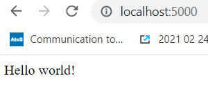
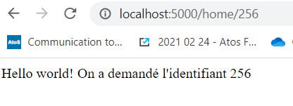

Un décorateur est une fonction qui modifie le comportement d'autres fonctions. Ils sont utilisés quand on veut ajouter du code identique à plusieurs fonctions.
Créons un décorateur qui se comporte comme un gestionnaire d'accès, en autorisant ou non quelqu'un à accéder à une page Web par exemple.
utilisateur = "admin"
# création du décorateur
def acces(fonction):
# fonction qui sera jouée pour tous les utilisateurs fournis
def resultat():
print("L'accès n'est pas possible")
if utilisateur != "admin":
return resultat
# ne pas oublier de retourner la fonction modifiée
return fonction
# je créé une fonction décorée, check_acces
@acces
def check_acces():
print("J'ai bien accès")
# j'appele cette fonction décorée, avec la variable utilisateur qui est toujours à admin
check_acces()
# si on change utilisateur, la fonction par défaut est lancée dans le décorateur
utilisateur = "not_admin"
@acces
def check_acces():
print("J'ai bien accès")
check_acces()
Le décorateur peut accepter les paramètres de la fonction initiale.
def acces(fonction):
def resultat(*params):
print("L'accès n'est pas possible pour " + params[0])
if utilisateur != "admin":
return resultat
return fonction
utilisateur = "not_admin"
@acces
def check_acces(utilisateur):
print("J'ai bien accès en tant que " + utilisateur)
check_acces(utilisateur)
utilisateur = "admin"
@acces
def check_acces(utilisateur):
print("J'ai bien accès en tant que " + utilisateur)
check_acces(utilisateur)
Dans Flask, une route est une vue d'une URL, elle conduit à l'exécution d'une fonction Python. Elles sont déclarées via un décorateur app.route().
Puisque app (notre instance de Flask) est appelée, il faut donc que la défintion des routes intervienne après l'instanciation de Flask dans notre package.
Commençons simplement en reprenant le squelette de l'application Flask et en modifiant le fichier app.py en ajoutant à la fin le contenu suivant.
# app/app.py
@app.route("/")
@app.route("/home")
def home():
return "Hello world!"
*domaine*/ et
*domaine*/home la même focntion home(), c'est à dire que ces deux URL renverront la même chosehome() renvoie ici simplement une chaîne de caractèresRunning on, donc http://127.0.0.1:5000 (notre localhost au port 5000)http://127.0.0.1:5000/ et http://127.0.0.1:5000/home donnera le même résultat
Attention, ce que le navigateur affiche n'est pas du HTML, seulement notre chaîne de caractère.
Il est maintenant temps d'observer nos premiers logs HTTP (qu'il convient de savoir lire afin de débugger l'application). Chaque fois qu'un appel HTTP est effectué sur le serveur, une ligne est renvoyée au minimum, décrivant la ressource demandée et le statut de la réponse.
127.0.0.1 - - [23/Oct/2022 14:06:37] "GET / HTTP/1.1" 200 -
127.0.0.1 - - [23/Oct/2022 14:21:40] "GET /home HTTP/1.1" 200 -
/ et /homeHTTP/1.1 est la version d'HTTP qui a été utilisée enfin vient le code de la réponse. En cas d'erreur et quand le mode DEBUG est activé, le message d'erreur Python s'affichera également.De très nombreuses pages Web ont des identifiants à la fin des URL. Ces derniers permettent de générer des pages à la volée à partir de données stockées autre part que dans l'application. Les développeurs du site n'ont ainsi pas à créer des milliers voire des millions de pages identiques où seule la donnée change.
Sur Wikidata, les identifiants sont bien à la fin et commencent par Q: https://www.wikidata.org/wiki/Q142.
Avec Flask, il est possible de créer des URL avec des paramètres à la fin.
# app/app.py
@app.route("/home/<string:id>")
def home(id:str):
return "Hello world! On a demandé l'identifiant " + id
<> dans la route<type: nom>| type | exemple |
|---|---|
| string | application |
| int | 3 |
| float | 1.23 |
| any | n'importe quoi |
| uuid | 123e4567-e89b-12d3-a456-426614174000 |
| path | /chemin/vers/ressource |
